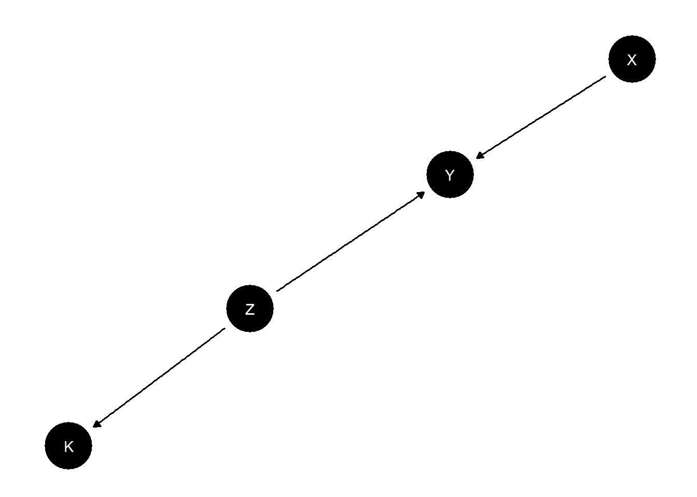

Chapter 11 Mixing models
We provide four examples of situations in which, by combining models, researchers learn more than they could from any single model.
In the previous two chapters, we described one form of integration that structural causal models can enable: the systematic combination of (what we typically think of as) qualitative and quantitative evidence for the purposes of drawing population- and case-level causal inferences. One feature of the analyses we have been considering so far is that the integration is essentially “nested.” We are, for instance, integrating quantitative evidence for a large set of cases with qualitative evidence for a subset of those cases. We are, moreover, drawing inferences from the set of cases we observe to a population within which that sample of cases is situated.
In this chapter, we examine how we can use structural causal models to integrate across studies or settings that are, in a sense, more disjointed from one another: across studies that examine different causal relationships altogether; study designs that require different assumptions about exogeneity; and contexts across which the causal quantities of interest may vary.
Integrating across a model Often, individual studies in a substantive domain examine distinct segments of a broader web of causal relationships. For instance, while one study might examine the effect of \(X\) on \(Y\), another might examine the effect of \(Z\) on \(Y\), and yet another might examine the effect of \(Z\) on \(K\). We show in this chapter how we can integrate across such studies in ways that yield learning that we could not achieve by taking each study on its own terms.
Integrating between experimental and observational studies One form of multi-method research that has become increasingly common is the use of both observational and experimental methods to study the same basic causal relationships. While an experiment can offer causal identification in a usually local or highly controlled setting, an observational analysis can often shed light on how the same relationships operate “in the wild,” if with greater risk of confounding. Usually, observational and experimental results are presented in parallel, as separate sources of support for a causal claim. We show how, in a causal model setup, we can use experimental and observational data jointly to address questions that cannot be answered when the designs are considered separately.
Transporting knowledge across contexts Researchers are sometimes in a situation in which they can identify causal quantities in a particular setting — say, from a randomized controlled trial implemented in a specific local context — but want to know how those inferences travel to other settings. Would the intervention work differently in other countries or regions? As we will explain, with an appropriately specified causal model and the right data from the original context, we can draw inferences about causal relationships in other contexts.
Models in hierarchies. Sometimes researchers learn about the same types of processes in different settings. By thinking of the processes in each setting as deriving from a family of processes, researchers can learn from observations in one setting about causal processes in another and also learn about the nature of heterogeneity between settings.
Before delving into the details of these strategies, we make one key qualification explicit: each of these approaches requires us to believe that setting-, or study-, specific causal model can be nested within a lower level, “encompassing,” model that operates across the multiple settings that we are learning from and want to draw inferences about. Encompassing models, of course, can specifically take heterogeneity across settings into account, for instance by including in the model moderators that condition the effects of interest. But we have to believe that we have indeed captured in the model any ways in which relationships vary across the set of contexts across which we are integrating evidence or transporting inferences.
Put differently, and perhaps more positively, we see social scientists commonly seeking to transport knowledge or combine information informally across studies and settings. Often such efforts are motivated, sometimes implicitly, by an interest in or reliance on general theoretical propositions. The approaches that we describe below force the researcher to be explicit about the underlying causal beliefs that warrant that integration while also ensuring that the integration proceeds in a way that is logically consistent with stated beliefs.
11.1 A jigsaw puzzle: Integrating across a model
Generating knowledge about a causal domain often involves cumulating learning across studies that each focus in on some specific part of the domain. For instance, scholars interested in the political economy and democratization might undertake studies focused on the relationship between inequality and mass protests; studies on the role of mass mobilization in generating regime change; pathways other than mass mobilization through which inequality might affect democratization; studies of the role of international sanctions on the likelihood that autocracies will democratize; and studies of the effects of democratization on other things, such as growth or the distribution of resources.
We can think of these studies as each analyzing data on a particular part of a broader, more encompassing causal model. In an informal way, if findings “hold together” in a reasonably intuitive way, we might be able to piece together an impression of the overall relations among variables in this domain. Yet an informal approach becomes more difficult for complex models or data patterns and, more importantly, will leave opportunities for learning unexaploited.
Consider this simple DAG, in which both \(X\) and \(Z\) are causes of \(Y\), and \(Z\) also causes \(K\). Now imagine three studies, all conducted in contexts in which we believe this model to hold:

- Study 1 is an RCT in which \(X\) is randomized, with data collected on both \(Y\) and \(K\). \(K\) is collected. \(Z\) is not observed.
- Study 2 is a factorial experiment, in which \(X\) and \(Z\) are independently randomized, allowing an examination of the joint effects of \(X\) and \(Z\) on \(Y\). \(K\) is not observed.
- Study 3 is an experiment randomizing \(Z\), with only \(K\) observed as an outcome. \(X\) and \(Y\) are not observed.
Now, let’s say that our primary interest is in the relationship between \(X\) and \(Y\). Obviously, Study 1 will, with a sufficiently large sample, perform just fine in estimaing the average treatment effect of \(X\) on \(Y\). However, what if we are interested in a case-oriented query, such as the probability of causation: the probability, say, \(X=1\) caused \(Y=1\) in a given \(X=1, Y=1\) case?
We know that within-case, process-tracing clues can sometimes provide probative value on case-level estimands like the probability of causation, and we have observed \(K\) in the Study 3 cases. So what if we combine the \(X\), \(Y\), and \(K\) data?
A simple analysis of the graph tells us that \(K\) cannot help us learn about \(Y\)’s potential outcomes since \(K\) and \(Y\) are \(d\)-separated by \(Z\), and we have not observed \(Z\) in Study 3. We see this confirmed in Table 11.1.
In the first pair of rows, we show the results of analyses in which we have simulated data from the whole model, then updated using the Study 1 observations. We give here the posterior mean on the probability of causation for an \(X=Y=1\) case, conditional on each possible value that \(K\) might take on. As we can see, our beliefs about the estimand remain unaffected by \(K\)’s value, meaning that it contains no information about \(X\)’s effect in the case.
We see that the same thing is true for each of the other studies. In study 2, we have not used \(K\) to update the model, and so have not learned anything form the data about \(K\)’s relationship to the other variables. Thus, we have no foundation on which to ground probative value fo \(K\). In study 3, we understand the \(Z,K\) relationship well, but know nothing quantitatively about how \(Z\) and \(X\) relate to \(Y\). Thus, we have learned nothing from Study 3 about what observing \(K\) might tell us about the effect of \(X\) on \(Y\).
| Study | Given | Case.estimand | mean | sd |
|---|---|---|---|---|
| 1 | X == 1 & Y == 1 & K == 1 | FALSE | 0.592 | 0.126 |
| X == 1 & Y == 1 & K == 0 | FALSE | 0.508 | 0.119 | |
| 2 | X == 1 & Y == 1 & K == 1 | FALSE | 0.650 | 0.122 |
| X == 1 & Y == 1 & K == 0 | FALSE | 0.651 | 0.124 | |
| 3 | X == 1 & Y == 1 & K == 1 | FALSE | 0.500 | 0.158 |
| X == 1 & Y == 1 & K == 0 | FALSE | 0.500 | 0.134 |
We can do much better, however, if we combine the data and update jointly across all model paramaters. The results are shown in Table 11.2. Updating simultaneously across the studies allows us, in a sense, to bridge across inferences. In particular, inferences from Study 2 make \(Z\) informative about \(Y\)’s potential outcomes under different values of \(X\). Meanwhile, inferences from the data in Study 3 allow us to use information on \(K\) to update on values for \(Z\). As we now see in rows 1 and 2, having updated the model in an integrated fashion, \(K\) now is informative about the probability of causation, with our posterior mean on this query changing substantially depending on the value of \(K\) that we observe in a case.
Rows 3-4 highlight that the updating works through inferences on \(Z\): we see that if \(Z\) is already known (we show this for \(Z=1\), but it holds for \(Z=0\) as well), then there are no additional gains from knowledge of \(K\).
| Given | Case.estimand | mean | sd |
|---|---|---|---|
| X == 1 & Y == 1 & K == 1 | FALSE | 0.80 | 0.09 |
| X == 1 & Y == 1 & K == 0 | FALSE | 0.55 | 0.14 |
| X == 1 & Y == 1 & K == 1 & Z == 1 | FALSE | 0.82 | 0.09 |
| X == 1 & Y == 1 & K == 0 & Z == 1 | FALSE | 0.82 | 0.09 |
We devote Chapter 15 to a discussion of how we justify a model. However, we note already that in this example we have an instance in which a researcher (examining a case in study 3) might wish to draw inferences using \(K\), but she does not have anything in study 1 that justifies using \(K\) for inference. However with access to studies 2 and 3, and conditional on the overall model, she has a justification for process tracing strategy. The general principle is that weaker commitments to lower level theories —here the causal structure—can justify more fully inferences from more fully specified higher-level theories.
11.2 Combining observational and experimental data
Experimental studies are often understood as the “gold standard” for causal inference. This is, in particular, because of the ability of a randomized trial (given certain assumptions, such as “no spillovers”) to eliminate sources of confounding. By design, an experiment removes from the situation processes that, in nature, would generate a correlation between selection into treatment and potential outcomes. An experiment thereby allows for an unbiased estimate of the average causal effect of the treatment on the outcome.
At the same time, an interesting weakness of experimental studies is that, by dealing so effectively with selection into treatment, they limit our ability to learn about selection and its implications in the real world. Often, however, we want to know what causal effects would be specifically for units that would in fact take up a treatment in a real-world, non-experimental settings. This kind of problem is studied for example by Knox et al. (2019).
Consider, for instance, a policy that would make schooling subsidies available to parents, with the aim of improving educational outcomes for children. How would we know if the policy was effective? A source of confounding in an observational setting might be that those parents who apply for and take up the subsidy might also be those who are investing more in their children’s education in other ways as compared to those parents who do not apply for the subsidy. To eliminate this problem, we might design an experiment in which parents are randomly assigned to receive (or not receive) the subsidy and compare outcomes between children in the treatment and control groups. With a no-spillovers assumption, we can extract the \(ATE\) of the receipt of subsidies.
What this experiment cannot tell us, however, is how much the policy will boost educational outcomes outside the experiment. That is because the causal quantity of interest, for answering that question, is not the \(ATE\): it is the average treatment effect for the treated (\(ATT\)), given real-world selection effects. That is, the policymaker wants to know what the effect of the subsidy will be for the children of parents who select into treatment. One could imagine the real-world \(ATT\) being higher than the \(ATE\) if, for instance, those parents who are informed and interested enough to take up the subsidy also put the subsidy to more effective use. One could also imagine the \(ATT\) being lower than the \(ATE\) is, for instance, there are diminishing marginal returns to educational investments and the self-selecting parents are already investing quite a lot.
Even outside a policy context, we may be interested in the effect of a causal condition where that causal condition emerges. To return to our inequality and democracy example, we may want to know what would have happened to autocracies with low inequality if they had had high inequality – the standard average-treatment effect question. But we might also be interested in knowing how much of a difference high inequality makes in the kinds of cases where high inequality tends to be occur – where the effect could be very different.
With such questions, we are in a sort of bind. The experiment cannot tell us who would naturally select into treatment and what the effects would be for them. Yet an observational study faces the challenge of ruling out confounding. Ideally, we would like to be able to combine the best features of both: use an experiment to deal with confounding and use observational data to learn about those whom nature assigns to treatment.
We can achieve this form of integration with a causal model. We do so by creating a model in which random assignment is nested within a broader set of assignment processes. We plot the model in Figure 11.1
At the substantive core of this model is the \(X \rightarrow Y\) relationship. However, we give \(X\) a parent that is fully exogenous, \(Z\), to capture a random-assignment process. We give \(X\) a second parent, \(O\), that is confounded with \(Y\): \(O\) here represents the observational scenario. Finally, we include a “switch” variable, \(R\), that determines whether \(X\) is randomly assigned or not. So when \(R=1\), \(X\) is determined solely by \(Z\), with \(X=Z\). When \(R=0\), we are in an observational setting, and \(X\) is determined solely by the confounded \(O\), with \(X=O\).
A few notes on the parameter space. Parameters allow for complete confounding between \(O\) and \(Y\), but \(Z\) and \(Y\) are unconfounded. \(X\) has only one causal type since its job is to operate as a conveyor belt, simply inheriting the value of \(Z\) or \(O\), depending on \(R\).
Note also that this model assumes the exclusion restriction that entering the experimental sample (\(R\)) is not related to \(Y\) other than through assignment of \(X\).

Figure 11.1: A model that nests an observational and an experimental study. The treatment \(X\) either takes on the observational value \(O\), or the assigned values \(Z\), depending on whether or not the case has been randomized, \(R\).
Now, let us imagine true parameter values such that \(X\) has a \(0.2\) average effect on \(Y\). However, the effect is different for those who are selected into treatment in an observational setting: it is positive (\(0.6\)) for cases in which \(X=1\) under observational assignment, but negative (\(-0.2\)) for cases in which \(X=0\) under observational assignment. (See appendix for complete specification.)
When we use the model to analyze the data, we will start with flat priors on the causal types.
The implied true values for the estimands of interest, and our priors on those estimands, are displayed in Table 11.3.
| Query | Given | Using | Case.estimand | mean | sd |
|---|---|---|---|---|---|
| ATE |
|
parameters | FALSE | 0.20 | |
| ATE |
|
priors | FALSE | -0.01 | 0.26 |
| ATE | R==0 | parameters | FALSE | 0.20 | |
| ATE | R==0 | priors | FALSE | -0.01 | 0.26 |
| ATE | R==1 | parameters | FALSE | 0.20 | |
| ATE | R==1 | priors | FALSE | -0.01 | 0.26 |
Now, we generate data from the model, using the posited “true” parameter values, and then update the model using these data.
We begin by analyzing just the observational data (cases where \(R=0\)) and display the results in Table 11.4. Recall that the true average effect of \(X\) on \(Y\) is \(0.2\). Naive analysis of the observational data, taking a simple difference in means between the \(X=0\) and \(X=1\) cases, yields a strongly upwardly biased estimate of that effect, of 0.0806.
| Estimate | Std. Error | t value | Pr(>|t|) | CI Lower | CI Upper | DF | |
|---|---|---|---|---|---|---|---|
| X | 0.831 | 0.027 | 30.37 | 0 | 0.777 | 0.885 | 188 |
In contrast, when we use CausalQueries to update on the full causal model and use both the experimental and observational data, we get the much more accurate results shown in Table 11.5. Moving down the rows, we show here the estimate of the unconditional \(ATE\), the estimate for the observational context (\(R=0\)), and the estimate for the experimental context (\(R=1\)). Unsurprisingly, the estimates are identical across all three settings since, in the model, \(R\) is \(d\)-separated from \(Y\) by \(X\), which is observed. And, as we see, the posterior means are very close to the right answer of \(0.2\).
| Query | Given | Using | Case.estimand | mean | sd |
|---|---|---|---|---|---|
| ATE |
|
posteriors | FALSE | 0.22 | 0.029 |
| ATE | R==0 | posteriors | FALSE | 0.22 | 0.029 |
| ATE | R==1 | posteriors | FALSE | 0.22 | 0.029 |
Since the model used both the experimental and the observational data, we might wonder from where the leverage derived: did the observational data improve our estimates of the average treatment effect, or do our inferences emerge strictly from the experimental data? In the appendix, we show results when we updating using experimental data only. Comparing the two sets of results, we find there that we do indeed get a tightening of posterior variance and a more accurate result when we use both the observational and experimental data, but the experimental data alone are quite powerful, as we should expect for an estimate of the \(ATE\). The observational data do not add a great deal to an \(ATE\) estimate, and the gains from observational data would be smaller still (and the experimental results even more accurate) if the experimental sample were larger.
However, what we can learn about uniquely from this model and the combined observational and experimental data is heterogeneity in effects between those that are in treatment and those that are in control in the observational setting. In Table 11.6, we display the results of \(ATT\) and \(ATC\) queries of the updated model. In the first two rows, we see that, in the experimental setting, the average effect of \(X\) on \(Y\) is the same on both the treated and control groups, exactly as we would expect under random assignment. In the third row, we see the estimate of \(X\)’s average effect for those assigned “by nature” to the control group in the observational setting, extracting a result close to the “true” value of \(-0.2\). The final row shows our estimate of the treatment effect for those who are selected into treatment in the observational setting, again getting close to the answer implied by the underlying data-generating process (\(0.6\)).
| Query | Given | Using | Case.estimand | mean | sd |
|---|---|---|---|---|---|
| ATE | R==1 & X==0 | posteriors | FALSE | 0.220 | 0.029 |
| ATE | R==1 & X==1 | posteriors | FALSE | 0.220 | 0.029 |
| ATE | R==0 & X==0 | posteriors | FALSE | -0.159 | 0.025 |
| ATE | R==0 & X==1 | posteriors | FALSE | 0.627 | 0.044 |
We can learn nothing about the observational \(ATT\) or \(ATC\) from the experimental data alone, where there \(ATT\) and \(ATC\) are the same quantity. And in the observational data alone, we are hobbled by confounding of unknown direction and size. What the mixed model and data, in effect, are able to do is (a) learn about the \(ATE\) experimental data, (b) use inferences on the \(ATE\) to separate true effects from confounding in the observational data and thus learn about the direction and size of the confounding in those data, and (c) estimate the treatment effect for the \(X=0\) group and for the \(X=1\) group, respectively, in the observational data using knowledge about confounding in these data. By mixing the experimental and observational data, we can learn about how the treatment has affected those units that, in the “real” world of the observational setting, selected into treatment and about how the treatment would affect those that selected into control.
The numbers in our toy example, while purely notional, can help us see why the observational \(ATT\) and \(ATC\) might be of great interest to decision makers where strong causal heterogeneity is a possibility. Based on the experimental data alone, we might conclude that the policy that makes \(X=1\) available is a good bet, given its positive \(ATE\) (assuming, of course, that \(Y=1\) is a valued outcome). And, of course, the observational data alone would not allow us to confidently conclude otherwise. What the integrated analysis reveals, however, is that \(X\) in fact has a negative mean effect on those who would be most likely to take up the treatment. The strong positive effect for the control strongly shapes the experimental results but will go unrealized in the real world. In a similar vein, these estimates can aid causal explanation. Seeing the positive \(ATE\) might lead us to infer that most of the \(X=1, Y=1\) cases we observe in the world are ones in which \(X=1\) caused \(Y=1\). The observational \(ATT\) estimates point in a very different direction, however, indicating that these are cases in which \(X\) is least likely to have a positive effect and, thus, where \(Y=1\) was most likely generated by some other cause.
We note that the results here relate to the LATE theorem (Angrist and Imbens 1995). Imagine using data only on (a) the experimental group in control and (b) the observational group, some of whom are in treatment. We can conceptualize our design as one in which the observational group are “encouraged” to take up treatment, allowing us to estimate the effect for the “compliers” in the observational setting: those that self-select into treatment. Conversely, we could use data only on (a) the experimental group in treatment and (b) the observational group, some of whom are in control. This is a design in which the observational group are “encouraged” to take the control condition, allowing us to estimate the effect for the “compliers” in this group (those that self select into control).
11.3 Transportation of findings across contexts
In some circumstances, we study the effect of \(X\) on \(Y\) in one context (a country, region, or time period, for instance) and then want to make inferences about these effects in another context (say, another country, region, or time period). We may face the challenge that effects are heterogeneous, and that conditions that vary across contexts may be related to treatment assignment, to outcomes, and to selection into the sample. For example, we might study the relationship between inequality and democratization in low-income countries and then want to know how those effects travel to middle-income settings. However, the level of income may have implications jointly for the level of inequality and for how likely inequality is to generate regime change, meaning that causal effects uncovered in the first context cannot be assumed to operate in the second context.
This is the problem studied by Pearl and Bareinboim (2014). In particular, Pearl and Bareinboim (2014) show for which nodes data are needed in order to “licence” external claims, given a model.
We illustrate with a simple model in which an observable confounder has a different distribution across contexts. In the model drawn in Figure 11.2, \(Context\) determines the distribution of the confounder, \(W\). We set a restriction such that the value of \(W\) in Context 1 is never less than the value of \(W\) in Context 0; our priors are otherwise flat over the remaining nodal types in the model.
Figure 11.2: Extrapolation when confounders have different distributions across cases.
| Query | Given | Using | Case.estimand | mean | sd |
|---|---|---|---|---|---|
| Incidence | Context==0 | priors | FALSE | 0.332 | 0.231 |
| Incidence | Context==0 | parameters | FALSE | 0.333 | |
| Incidence | Context==1 | priors | FALSE | 0.666 | 0.234 |
| Incidence | Context==1 | parameters | FALSE | 0.667 | |
| ATE | Context==0 | priors | FALSE | 0.001 | 0.138 |
| ATE | Context==0 | parameters | FALSE | 0.333 | |
| ATE | Context==1 | priors | FALSE | 0.000 | 0.140 |
| ATE | Context==1 | parameters | FALSE | 0.573 | |
| CATE | Context==0 | priors | FALSE | 0.001 | 0.169 |
| CATE | Context==0 | parameters | FALSE | 0.812 | |
| CATE | Context==1 | priors | FALSE | 0.001 | 0.169 |
| CATE | Context==1 | parameters | FALSE | 0.812 |
We show priors and true values for the estimands (drawn from the parameters) in Table 11.7. We see that the incidence of \(W=1\) is higher in Context 1 than in Context 0, both in our priors and in the “truth” posited by the assigned parameter values. The “true” \(ATE\) of \(X\) on \(Y\) is also higher in Context 1, though this is not reflected in our priors. The average treatment effect conditional on \(W\) is the same in both contexts, whether we work from priors or assigned parameter values, as it must be given the model. That is, in this model the \(ATE\) varies conditional on \(W\) — and it varies conditional only on \(W\).
We now update the model using data from one context and then see if we can transport those findings to the other context. Specifically, we update using data on \(X, Y,\) and \(W\) from Context 0. We then use the updated beliefs to draw inferences about Context 1, using data only on \(W\) from Context 1. In Table 11.8, we show our posteriors on the queries of interest as compared to the truth, given the parameter values.
| Query | Given | Using | Case.estimand | mean | sd |
|---|---|---|---|---|---|
| Incidence | Context==0 | posteriors | FALSE | 0.324 | 0.007 |
| Incidence | Context==0 | parameters | FALSE | 0.333 | |
| Incidence | Context==1 | posteriors | FALSE | 0.676 | 0.007 |
| Incidence | Context==1 | parameters | FALSE | 0.667 | |
| ATE | Context==0 | posteriors | FALSE | 0.330 | 0.011 |
| ATE | Context==0 | parameters | FALSE | 0.333 | |
| ATE | Context==1 | posteriors | FALSE | 0.578 | 0.009 |
| ATE | Context==1 | parameters | FALSE | 0.573 | |
| CATE | Context==0 | posteriors | FALSE | 0.807 | 0.009 |
| CATE | Context==0 | parameters | FALSE | 0.812 | |
| CATE | Context==1 | posteriors | FALSE | 0.807 | 0.009 |
| CATE | Context==1 | parameters | FALSE | 0.812 |
By comparing the \(ATE\) estimates using our posteriors and the estimates using the assigned parameter values, we see that we have done well in recovering the effects, both for the context we studied (i.e., in which we observed \(X\) and \(Y\)) and for the context we did not study. We can think of the learning here as akin to post-stratification. We have learned from observing \(X, Y\), and \(W\) in Context 0 how \(X\)’s effect depends on \(W\). Then we use those updated beliefs when confronted with a new value of \(W\) in Context 1 to form a belief about \(X\)’s effect in this second context. Of course, getting the right answer from this procedure depends, as always, on starting with the correct model.
We can also see, in Table 11.9, what would have happened if we had attempted to make the extrapolation to Context 1 without data on \(W\) in that context. We would get the wrong answer for Context 1, though we would also report greater posterior variance. The higher posterior variance here captures the fact that we know things could be different in Context 1, but we don’t know in what way they are different.
| Query | Given | Using | Case.estimand | mean | sd |
|---|---|---|---|---|---|
| Incidence | Context==0 | posteriors | FALSE | 0.329 | 0.007 |
| Incidence | Context==0 | parameters | FALSE | 0.333 | |
| Incidence | Context==1 | posteriors | FALSE | 0.667 | 0.007 |
| Incidence | Context==1 | parameters | FALSE | 0.667 | |
| ATE | Context==0 | posteriors | FALSE | 0.314 | 0.012 |
| ATE | Context==0 | parameters | FALSE | 0.333 | |
| ATE | Context==1 | posteriors | FALSE | 0.560 | 0.009 |
| ATE | Context==1 | parameters | FALSE | 0.573 | |
| CATE | Context==0 | posteriors | FALSE | 0.801 | 0.009 |
| CATE | Context==0 | parameters | FALSE | 0.812 | |
| CATE | Context==1 | posteriors | FALSE | 0.801 | 0.009 |
| CATE | Context==1 | parameters | FALSE | 0.812 |
11.4 Multilevel models, meta-analysis
A key idea in Bayesian meta-analysis is that when you analyze multiple studies together you learn not only about common processes that give rise to the different results seen in different sites, but you also learn more about each study from seeing the other studies.
A classic setup is provided in Gelman et al. (2013), in which we have access to estimates of effects and uncertainty in eight sites (schools), \((b_j, se_j)_{j \in \{1,2,\dots,8\}}\). To integrate learning across these studies we employ a “hierarchical model” that treats each \(b_j\) as a draw from distribution \(N(\beta_j, se_j)\) (and, in turn treats each \(\beta_j\) is a draw from distribution \(N(\beta, \sigma)\)). In that setup we want to learn about the superpopulation parameters \(\beta, \sigma\), but we also get to learn more about the study level effects \((\beta_j)_{j \in \{1,2,\dots,8\}}\) by studying them jointly.
A hierarchical model like this allows us to think about the populations in our study sites as themselves drawn from a larger population (“superpopulation”) of settings. And, crucially, it allows us in turn to use data in the study sites to learn about that broader superpopulation of settings.
Although often used in the context of linear models with parameters for average causal effects, this logic works just as well with the kinds of causal models we have been using in this book.
Let’s review how our analytic setup has worked so far. At each node in a causal model, we conceptualize a given case as having a particular nodal type. The case’s nodal type is drawn from a distribution of nodal types in the population of cases from which this case has been drawn. When we do process tracing, we consider that population-level distribution to be a set of fixed shares of nodal types in the population: say, for node \(Y\), we might believe that half the cases in the population are \(\lambda^Y_{01}\), a quarter are \(\lambda^Y_{00}\), and a quarter are \(\lambda^Y_{11}\). We then use data from the case to update on the case’s nodal types (or on the combination of nodal types that correspond to some case-level query), given the population-level shares.
When we engage in population-level inference, we begin with uncertainty about the population-level shares of types, and we express our prior beliefs about those shares as a Dirichlet distribution. So, for instance, our beliefs might be centered around a \(\lambda^Y_{01}=0.5, \lambda^Y_{00}=0.25, \lambda^Y_{11}=0.25\) breakdown of shares in the population; and we also express some degree of uncertainty about what the breakdown is. Now, when we analyze data on some number of cases, we can update both on those cases’ types and on our beliefs about the distribution of types in the population – perhaps shifting toward a higher share of \(\lambda^Y_{01}\)’s (and with a change in the distribution’s variance).
We can also, as in the last section, build a model in which there are multiple settings, possibly differing on some population-level characteristic. Fundamentally, however, the setup in the last section still involved population-level inference in that we were assuming that the type shares (\(\lambda\) values) are the same across settings. The settings might differ in the value of a moderating variable, but they do not differ in the shares of cases that would respond in any given way to the moderator (and other causal conditions). The data allow us to update on what those common, cross-setting type proportions are.
When we build a hierarchical model, each case is still understood as being embedded within a population: our cases might be citizens, say, each embedded within a country. The key difference from population-level inference is that we now conceive of there being multiple populations – say, multiple countries – each drawn from a population of populations, or superpopulation. Now, we think of each population (country) as having its own set of type shares for each node. And we think of each country’s type shares as being drawn from a Dirichlet distribution of type shares (for each node) that lives at the superpopulation level. Moreover, we are uncertain about what that distribution at the superpopulation level is. We uncertain around what type proportions the superpopulation-level distribution is centered, and we are uncertain about how dispersed this distribution is. While the distribution’s central tendency will be related to the mean type shares for countries, its variance will determine the degree of heterogeneity across countries in their type shares.
To summarize, in population-level inference, we express uncertainty about the population’s type shares with a Dirichlet prior, at the population level, on which we update. In the hierarchical setting, we are uncertain both about the population-level type shares and the superpopulation Dirichlet from which each node’s type shares are drawn. We express our uncertainty about each superpopulation Dirichlet by positing a prior distribution over the Dirichlet’s alpha parameters.
Now, when we observe data on citizens within countries, we can update our beliefs about types fora the particular citizens we observe, about type shares in the population of citizens within each country that we study, and on the parameters of the Dirichlet distribution from which population shares have been drawn. In updating on the last of these, we are learning not just about the countries we observe but also about those we do not directly observe.
We illustrate with a simulation using a simple \(X,Y\) model. We imagine that we are studying the \(X \rightarrow Y\) relationship in n countries. Each country has a parameter distribution drawn from common Dirichelets. We start off with flat priors over the alpha arguments of the superpopulation Dirichlets.
We assign a particular true set of superpopulation parameter values that, for the analytic exercise, is treated as unknown and that we would like to recover. In this true world, the probability of assignment to \(X=1\) is .4, and the average treatment effect is .1. Using these true parameter values, we simulate \(X, Y\) data for \(n=8\) countries.

Figure 11.3: Joint distributions over alpha parameters.
In Figure 11.3, we graph our posterior beliefs about the superpopulation parameters. We do this by plotting two alpha parameters against each other at a time. In the first panel, we plot the alphas for \(X=0\) and \(X=1\). In the next panel, we plot the alpha’s corresponding to \(c\) types against those corresponding to \(d\) types. And in the third panel we plot the alpha’s corresponding to \(a\) types against those corresponding to \(b\) types.
As we can see, each distribution falls roughly along a diagonal. Probability mass located further up the diagonal represents worlds in which the superpopulation Dirichlet distribution of type shares is relatively low in variance. Thus, the more that our posterior beliefs are concentrated toward a graph’s northeast corner, the lower the heterogeneity we have inferred there to be in the relevant type shares across countries. Meanwhile, the dispersion of probability mass away from the diagonal represents greater posterior uncertainty about the heterogeneity across countries, arising from greater variance about the posterior distribution of the alphas.
We can think of a concentration parameter here that is operationalized as the sum of the \(\alpha^j\) terms for a node, \(j\), with a higher value representing lower overall heterogeneity.

Figure 11.4: Updating on study level parameters from integrated analyses.
In Figure 11.4 we turn to the causal query of interest and show a comparison of three \(ATE\) estimates for each country: in blue, we show the unpooled estimate, or the estimate we get for each country using only data from that country; in red, we see the pooled estimates, or the estimate we get for each country using data from all countries to inform that country’s parameter estimates; and in black, we plot the truth as posited for this simulation. As we can see, the pooled estimates are all closer to the center than the unpooled estimates: this is because we are effectively using data from all countries to discount extreme features of the data observed in a given country. Put differently, the pooled data serve the function of a prior when it comes to drawing inferences about a single country: our inference is a compromise between the data from that country and the beliefs we have formed from the pooled data. We can also see that, for most countries, the pooling helps: the regularization provided by the pooling gives us an estimate closer to the truth for most of the settings.